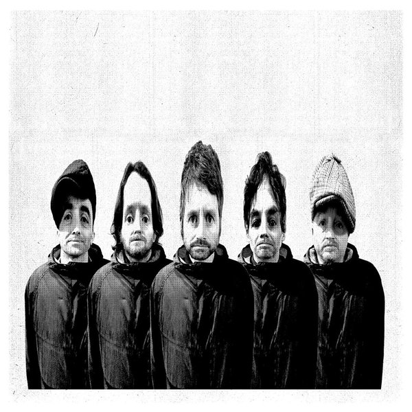

Super Furry Animals (Interview)

Welsh psychedelic rock band Super Furry Animals will shortly be heading on the road for a series of special live shows, marking 20 years since the release of debut album Fuzzy Logic, in which they'll be playing the album and its follow-up, Radiator, in full. Ahead of the tour, which starts in Belfast on 30 November, Craig Stevens caught up with bassist Guto Pryce.
You’re about to go on tour performing Fuzzy Logic and Radiator in full, in celebration of 20 years of Fuzzy Logic. How did the idea for the tour come about?
We re-released Mwng a couple of years ago, about the same time as we started playing again. And we realised that there were more anniversaries coming up and we should use those to take a look at our old records. I’m not quite sure why we’re doing both Fuzzy Logic and Radiator now, we could have done Fuzzy Logic now and Radiator next year when that’s 20 years old. But it appealed to us; we haven’t got a new record and we’ve been doing our set for 18 months, so it sounded like a fun thing to do.
Have you allowed the songs to evolve over time or are you being very strict in making them sound exactly like they do on the records?
About half of the songs on the albums are songs that we don’t play very often, a few of the songs are songs that we’ve never played live. We couldn’t play them live at the time because we didn’t have the technology. Now we can.
Our friend Kliph went back to the old tapes and we managed to make digital copies and listen to what we played, so we could pick out the sounds, the original samples that we used. Some of those were done on synths and we had no idea what synths they were.
But to answer your question, no, the songs won’t be drastically reinvented. There’s a song called Mountain People which is on Radiator and we’ve been playing that recently. That song includes samplers that were quite basic at the time. You could only get one and a half seconds of samples on a floppy disk, they were different times! Mountain People has been re-jigged over the years and sounds a little bit different, and we’ll keep it the modern way. But there definitely won’t be any horrible surprises.
There’s a whole host of interesting support acts on the tour; Bo Ningen, Telemann, and of course, Goldie Lookin Chain. How much involvement did you have in picking the support acts for this tour?
Total involvement. With Bo Ningen, for example, I knew they were coming to the Aberystwyth show so I thought, well, they may as well play! I want to see them. They’re all people we’re friendly with and acts where we enjoy their company and their music.
What are your strongest memories from being in the band at the time Fuzzy Logic and Radiator were released?
Things happened very quickly. We’d do five or six tours a year. We were either on tour or in the studio, so always in each other’s company. We were enjoying it, enjoying the opportunities as they came along.
Your “best of” compilation ZOOM! The Best of Super Furry Animals, 1995 - 2016 was released earlier in the month. Was it difficult to decide what made the final cut?
I think if it was left to the band to decide what to include, we’d still be deciding now! I mentioned Cliff earlier. We trust him, he’s got his finger on the pulse, he knows more about us than we know about ourselves. He knows which of our tracks haven’t been released on CD before, for example, so he’s a great guy to put these sorts of packages together. We just handed it over to him. It’s good for us to take the pressure off, one of the most stressful things is making these kinds of decisions. So it’s great to be able to delegate that to a friend.
How significant is it that the dates 1995 to 2016 are included in the title of the “best of”, as opposed to simply calling it a “best of”?
It’s significant, we did that for a reason. We didn’t want to put a stop to us making new music. We’ve got no plans but there could be plans at some point in the future. We didn’t want to sign off.
How was it playing in Mexico a few days ago, at the Corona Capital 2016 festival?
Tremendous, amazing. It was mind-blowing. It was the first time we’d ever played in Mexico and we played to a great crowd who really seemed to know our stuff. We were playing two bands before Kraftwerk, who are one of my favourite bands, so it was great to get to see them afterwards with a tequila and a beer!
As part of my research for this interview, for the first time, I came across the music video for the song Run-Away, directed by Richard Ayoade and starring Matt Berry. It’s a brilliant, bizarre video. How did your worlds collide?
I don’t know. I’m not sure how it happened to be honest, maybe through Rough Trade? I think Richard Ayoade was keen to start making films. He's like a super-talented guy, quite the filmmaker.
The Furries recently shared a petition on Facebook asking the UK government to put an end to fans being ripped off by ticket touts. How confident are you that there will be changes made to what is clearly a frustration for bands and fans alike?
I have no idea. The way things are at the moment, with how fucked up everything is, it seems terribly unfair for some people. It’s nuts how we can go on tour taking two articulated lorries and 20 people and charge £30 a ticket and then someone else can make whatever, £7, for just sending an email. It’s mental. Maybe cash on the door is the answer. Maybe that’ll sort it all out. Back to the stone age!
As well as being a member of the SFA, you’ve got a number of other projects including your other band Gulp. The Gulp website mentions plans for a second album. Did that get put on hold when the Furries came back from hiatus? What does the future hold for Gulp?
It did get put on hold, yeah, because we’ve been mega-busy, but once we’ve had the opportunity to spend some time on it, some music will be out, soon.
What's been your favourite album of 2016?
A couple of weeks ago, I got the A Tribe Called Quest album [We Got It From Here... Thank You 4 Your Service] and obviously, Phife Dawg was one of the many people we’ve lost this year. The record is a total ray of sunshine in a mad, mad world. It puts a big smile on my face listening to it. It’s a great record. It sounds like a sampler, turntable record but it also sounds modern and futuristic even. Timeless.
And finally, I have a couple of questions submitted by comedian, very capable radio presenter, hammer-legend and fellow Welshman Elis James. If you could go on the piss with one Cardiff City player past or present, who would it be?
Gary Medel, his nickname’s the Pitbull. I think we’d have a laugh!
...and whose idea was it to make the Out Spaced record case in the shape of a breast?
It wasn’t actually meant to be in the shape of a breast! It was made in Creation’s heyday, when they were minted with Oasis money. The brief we gave for that sleeve was that it must be able to survive re-entry from space. That was what they came up with. The teat was there so that you could hold it and pull out the CD. The design made it into the V&A museum!
Thanks to Guto for taking the time to speak to us, and to Elis for his questions. Details of the Super Furry Animals' UK and Ireland tour dates can be found on their website.
7 December, 2016 - 17:37 — Craig Stevens